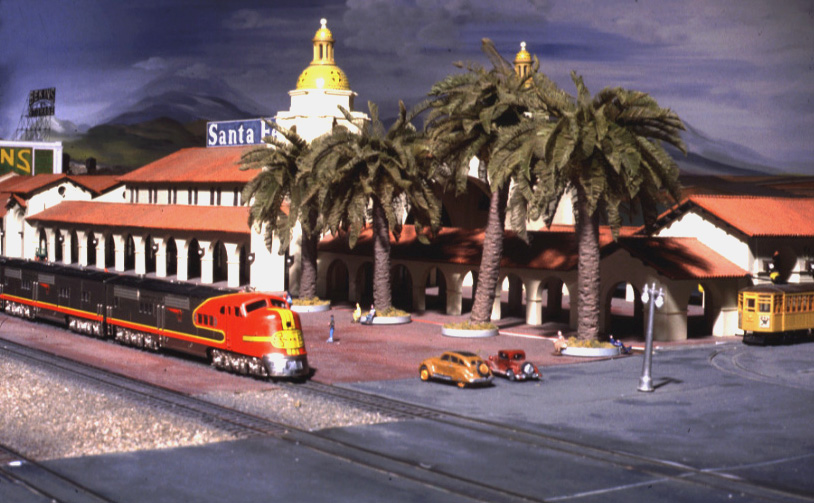

-- Back to da trains! --

This is the second group of photos from Don Mitchell. These photographs feature the San Diego Santa Fe Depot, modeled by Pete Peters. The model was featured in Model Railroader, January 1990, as Model of the Month. Dons photos were used in MR, and the ones I scanned are from the same photo session.
The prototype Santa Fe Depot was built in 1915, to accomodate increased crowds expected for the Panama-California Exposition. It replaced an equally interesting depot of Victorian-Gothic architecture built during 1887-88. The depot is still standing, and is used as the southern terminus for Amtrak trains and a commuter train, 'The Coaster'. The San Diego Trolley has a major terminal just across the street, so the depot remains a busy terminal for rail transit in San Diego.
George 'Pete' Peters has been one of the premier modelers of the SDSoNS for many years. Just when you think he has reached his peak, out comes another 'jewel'. He created the depot and the Bekins Storage building that shows in the background on some photos. He also modeled the Pacific Gas and Electric Power station that sits across the street from the front end of the Depot. He has pioneered narrow gauge in N scale, being the first to create an n3 K-37, a gear driven Shay in n3 (powered through the gears!), plus Nn2, TTn2 and TTn3 locomotives.
All of his craftsmanship is exceptional and the ATSF Depot is no exception. In addition to the exterior modeling, the interior includes details of the tilework used on the walls, people queing up for a trip, full lighting, and an upper room in the depot is detailed complete with furniture and accessories.
| |||
|---|---|---|---|
|
Oblique view of the Depot. Brass trains by Marty Young and Norm Wright.
| 72KB-- | Mitchell #12197 | |
|
Front view of depot (Decorated for Christmas),
with Pete's Bekins building in the background.
| 86KB-- | Mitchell #2086 | |
|
Oblique view of depot. The 'porch' in front of the towers
was removed in 1963.
| 50KB-- | Mitchell #2102 | |
|
Low oblique view of depot.
| 54KB-- | Mitchell #2114 | |
|
Side view (as seen from outside the layout).
| 50KB-- | Mitchell #2103 | |
|
Side view (faces into the layout).
| 50KB-- | Mitchell #2107 | |
|
Depot entry.
| 117KB-- | Mitchell #2122 | |
|
Closer view of Depot entry.
| 36KB-- | Mitchell #2126 | |
|
Depot side view, closeup.
| 63KB-- | Mitchell #2129 | |
|
Depot interior view.
| 36KB-- | Mitchell #2133 |